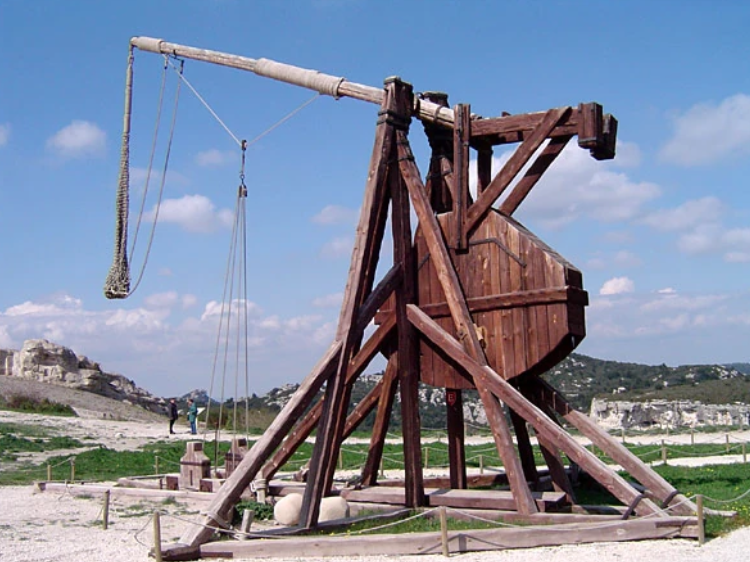
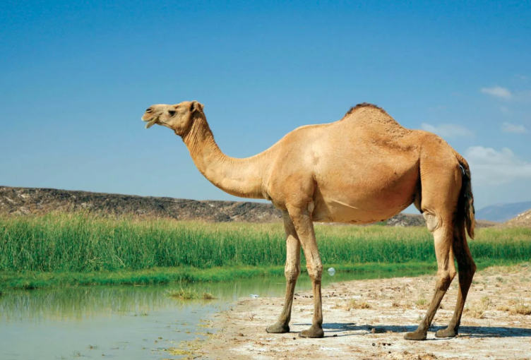

There are better wonders in this world than the seven we already have, so let me shed some light on the hidden gems of the world
- Monkey's Eyebrow, Kentucky
- Some of the staple activities in Monkey's Eyebrow, KY are goose hunting and looking at the welcome sign.
- Pee Pee Island, Newfoundland, Canada
- A canadian classic and a hub of world trade, Pee Pee Island is one of the best places to go to sit on an island and do nothing.
- Disapointment Island
- Off the west coast of Auckland Island, Disapointment Island is a center of cultural significance and entertainment.
- Batman, Turkey
- Batman is smaller place than some of these others, but its small town vibes will make you feel at home. some things you can do are go to the Shell gas station and buy Dominos pizza.
- Accident, Maryland
- The final amazing destination on this list is a bustling center of human activity. An excellent place to live for aliens who are pretending to be human, Accident, Maryland is a must visit.
Travel Options

